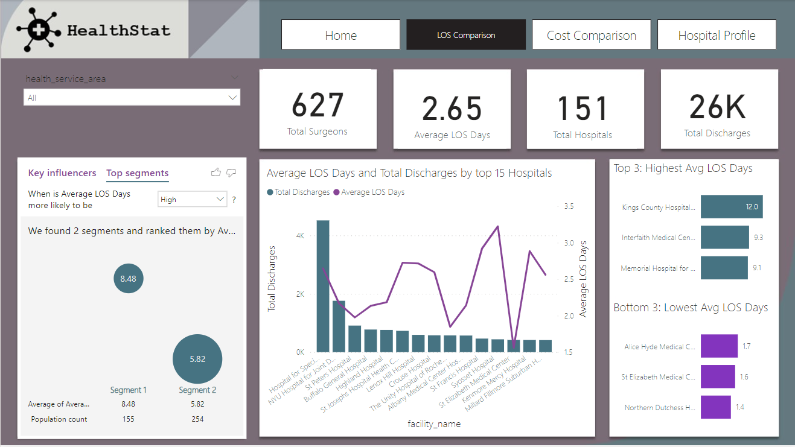

Check the project on GitHub
Introduction
HealthStat is a fictious consulting company that provides health care analytics as a service. In healthcare analytics, quality metrics are often classified across six domains:
- Safety: Avoiding harm to patients from the care that is intended to help them.
- Effectiveness: How well a healthcare service achieves its intended purpose.
- Timeliness: Reducing delays for both those who receive and those who give care.
- Patient-Centered: Providing care that is respectful of and responsive to individual patient preferences, needs, and values.
- Equity: Providing care that does not vary in quality because of personal characteristics.
- Efficiency: Avoiding waste, including wase of equipment, supplies, ideas, and energy.
The focus for this case study is efficiency domain.
For further reading about quality measures, click this
link
Measuring Hospital Efficiency
Length of stay (LOS) is considered an important indicator of the efficiency of hospital management. It's calculated as the total duration in days for a patient stay in hospital. A shorter LOS is often desirable in hospital operations. Primarily, shorter LOS means costs can be lowered. Reducing LOS can also release capacity in the system and improve throughput, enabling hospitals to serve more patients. Many factors can impact LOS. Patient age, health status, the type of procedure (or surgery), whether or not there were any complications, and the size of the hospital are some common factors. For further information, you can read this article
Objectives
The goal for this case study will be to create a dashboard that enables stakeholders to:
- Progress through key insights in a logical flow.
- View informative, concise visuals
- Get data they need to make business decisions for improving efficiency.
About Dataset
The dataset is one single table with 30 columns and 26,594 rows. Each
row in the dataset represents a single inpatient stay, from their
admission to discharge date. The health information in this dataset is
not individually identifiable. This means the file does not contain
personal health information.
The features of the dataset are:
- Health_service_area: Description of the health service area in which the hospital is located (text)
- Hospital_county: Description of the county in which the hospital is located (text)
- Operating_certificate_number: The facility operating certificate number (text)
- facility_id: Permanent Facility Identifier (PFI) (number)
- facility_name: The name of the facility where services were performed based on the Permanent Facility Identifier (PFI), as maintained by the NYSDOH Division of Health Facility Planning (text)
- age_group: Age in years at time of discharge. Grouped into the following age groups: 0 to 17, 18 to 29, 30 to 49, 50 to 69, and 70 or Older (text)
- zip_code_3_digits: The first three digits of the patient's zip code. Blank for: - population size less than 20,000 or cell size less than 10 on population. classification strata. “OOS” are Out of State zip codes (text)
- gender: Patient gender: (M) Male, (F) Female, (U) Unknown (text)
- race: Black/African American, Multi, Other Race, Unknown, White. Other Race includes Native Americans and Asian/Pacific Islander (text)
- ethnicity: The ethnicity of the patient: Spanish/Hispanic Origin, Not of Spanish/Hispanic Origin, Multi, Unknown (text)
- length_of_stay: The total number of patient days at an acute level and/or other than acute care level (excluding leave of absence days). (Discharge Date - Admission Date) + 1. Length of Stay greater than or equal to 120 days has been aggregated to 120+ days (text)
- type_of_admission: A description of the manner in which the patient was admitted to the health care facility: Elective, Emergency, Newborn, Not Available, Trauma, Urgent (text)
- patient_disposition: The patient's destination or status upon discharge (text)
- discharge_year: The year (CCYY) of discharge (number)
- ccs_diagnosis_code: AHRQ Clinical Classification Software (CCS) Diagnosis Category Code. More information on the CCS system may be found at the direct link (number)
- ccs_diagnosis_description: AHRQ Clinical Classification Software (CCS) Diagnosis Category Description. More information on the CCS system may be found at the direct link (text)
- ccs_procedure_code: AHRQ Clinical Classification Software (CCS) ICD-9 Procedure Category Code. More information on the CCS system may be found at the direct link (number)
- ccs_procedure_description: AHRQ Clinical Classification Software (CCS) ICD-9 Procedure Category Description. More information on the CCS system may be found at the direct link (text)
- apr_drg_code: The APR-DRG Classification Code In Calendar Year 2011, Version 28 of the APR-DRG Grouper . (number)
- apr_drg_description: The APR-DRG Classification Code Description In Calendar Year 2011, Version 28 of the APR-DRG Grouper . (text)
- apr_mdc_code: All Patient Refined Major Diagnostic Category (APR MDC) Code. APR-DRG Codes 001-006 and 950-956 may group to more than one MDC Code. All other APR DRGs group to one MDC category (number)
- apr_mdc_description: All Patient Refined Major Diagnostic Category (APR MDC) Description (text)
- apr_severity_of_illness_code: The APR-DRG Severity of Illness Code: 1, 2, 3, 4 (number)
- apr_severity_of_illness_description: All Patient Refined Severity of Illness (APR SOI) Description. Minor (1), Moderate (2), Major (3), Extreme (4) (text)
- apr_risk_of_mortality: All Patient Refined Risk of Mortality (APR ROM). Minor (1), Moderate (2), Major (3) , Extreme (4) (text)
- apr_medical_surgical_description: The APR-DRG specific classification of Medical, Surgical or Not Applicable (text)
- attending_provider_license_number: The professional license number, issued by the New York State Department of Education, used to identify the physician or other health care professional primarily responsible for the care of the patient (text)
- operating_provider_license_number: The professional license number, issued by the New York State Department of Education, used to identify the physician or other health care professional who performed the principal procedure (text)
- total_charges: Total charges for the discharge (number)
- total_costs: Total estimated costs for the discharge (number)
In this case study, the focus is on patients who received hip replacement surgery (most of the data as shown in the figure below). Here's a bit of a background on what this procedure is all about. Patients with hip pain, typically arthritis, may require elective hip replacement surgery. In this procedure, damaged bone and cartilage is surgically removed and replaced with prosthetic components. Hospital stay can range from 0 to 2 or more days. For further information you can click this link
The dataset has some key attributes to analyze efficiency. Length of stay measured in total days Total costs attributed to each hospital stay. Here are some of the key attributes of interest for the case study. These include a unique identifier for facility (facility_id), a grouping of patient age (age_group), patient's disposition (patient_disposition), the diagnosis description (ccs_diagnosis_desposition), severity of illness (apr_severity_of_illness), and risk of mortality (apr_risk_of_mortality). We will closely evaluate these (and others) in the case study as we work to understand what factors impact length of stay and related costs.
Analysis Method
The data file was transformed and processed using Power BI to ensure data completeness and validity. The data was filtered to include only hip replacement surgery. New columns and measures were added to help with the analysis. Finally, the dashboard was created with Power BI based on the template provided to help stakeholders:
- Progress through key insights in a logical flow.
- View informative, concise visuals.
- Get data they need to make business decisions for improving efficiency.
Resulting Dashboard
The dashboard has four pages:
- Home Page
- LOS Comparison Page 
- Cost Comparison
- Hospital Profile